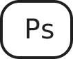
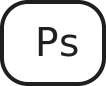

03
UX
T-SHIRT WEBSHOP
- IDÉ-GENERERING
- UX-RESEARCH
- DESIGNPROCESS
- PRODUKTER
- TEST
- PROTOTYPE
PITCH

I temaet UX blev vi introduceret til samspillet mellem brugere og brugergrænseflader, samt hvilke metoder og værktøjer der kan benyttes i research og digital produkt-udvikling. Vi blev introduceret til UX-research, UI-konvetioner, prototyper som blev udarbejdet i Adobe XD og test som vi udførte af vores prototype. Derudover blev vi introduceret til skitsering, samt copy og micro-copy.
IDÉUDVIKLING
Jeg begyndte min idéudvikling ved at lave et mindmap for at strukturere og visualisere mine tanker og idéer.
UX - RESEARCH
Jeg udførte forskellige former for UX-research, herunder desk-research og observationsresearch, for at udvikle et koncept for en t-shirt webshop. I desk-research undersøgte jeg bæredygtighedens vigtighed, og i observationsresearch observerede jeg forbrugernes adfærd ved køb af t-shirts. Jeg fandt en interessant artikel om tøjvaskens indvirkning på t-shirtens CO2-aftryk. Derudover udførte jeg en survey for at identificere min målgruppe og indsamle information til webshoppens indhold, samt et five act" interview.
UDFORDRING
Overbevise forbrugeren om at bærerdygtighed og velgørenhed er stærke faktorer, når man køber en t-shirt.
Lave en troværdig, nem og brugervenlig købsprocess med så få klik som muligt.
FORMÅL
Skabe en t-shirt webshop med fokus på, at støtte lande i nød og bedrage positivt til klimaet.
MÅLGRUPPE
01
Aldersgruppe 20-40 år
02
Interesseret i at donere til et godt formål
03
Klimabevidste og bevidste om udfordringer i verden
USP
“Don’t just shop SUPPORT”
SKITSER
CRAZY 8'S
SKITSER AF PROTOTYPE
Jeg begyndte min skitseproces med "Crazy 8's", hvor jeg skitserede 8 forskellige layouts til webshoppen på et minut hver. Dette hjalp mig med at samle alle mine tanker og idéer. Processen gav mig også en forståelse for den visuelle og layoutmæssige retning, jeg ønskede at arbejde i.
MOODBOARD
Jeg udarbjedede et rent og simpelt moodboard med af billeder, der visuelt repræsenterede mine idéer, følelser og den ønskede stemning, jeg ønskede at inkorporere i min webshop.
STYLETILE
Jeg udarbejdede et styletile, med logo, farver, fonte, billedstil og UI elementer min webshop skulle indeholde.
PRODUKTER
Webshoppen sælger forskellige støtte t-shirts designet af mig, der er dedikeret til lande i akut behov for hjælp som Palæstina, Syrien, Tyrkiet, Ukraine, Iran og Pakistan. Ud over t-shirtsene tilbyder webshoppen også produkter fra lokale butikker og virksomheder i de pågældende lande for at støtte deres små virksomheder og give dem en hjælpende hånd.
TEST
Jeg udførte et "five act" interview for at teste min færdige webshop og forbedre brugeroplevelsen. Jeg startede med en ”friendly welcome” og stillede ”context questions”. Derefter præsenterede jeg specifikke ”tasks” for brugeren, der førte til en opsummering og afslutning af interviewet. Målet var at evaluere og optimere brugeroplevelsen af webshoppen.
PROTOTYPE
Jeg udviklede en prototype efter at have defineret stil og indhold. Prototypen fokuserede på nem navigation og at opnå målet med så få klik som muligt. Jeg brugte moodboard, styletile, test og skitser som grundlag for at udarbejde prototypen.

 
